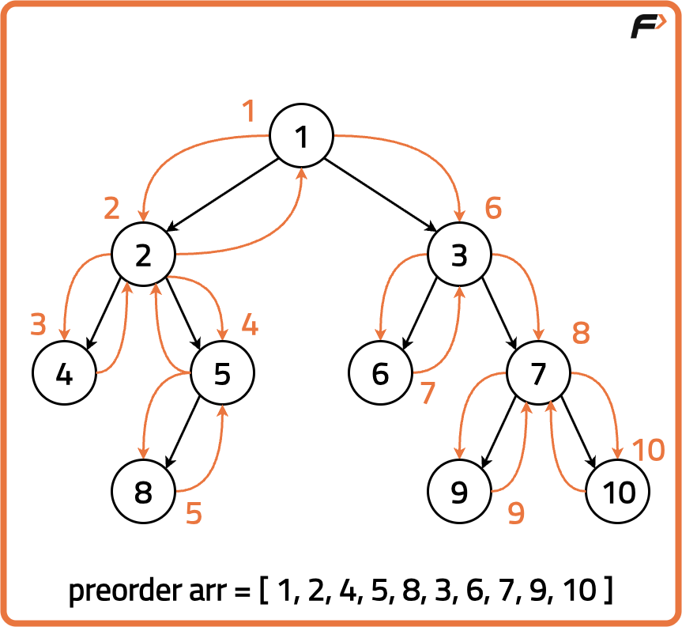
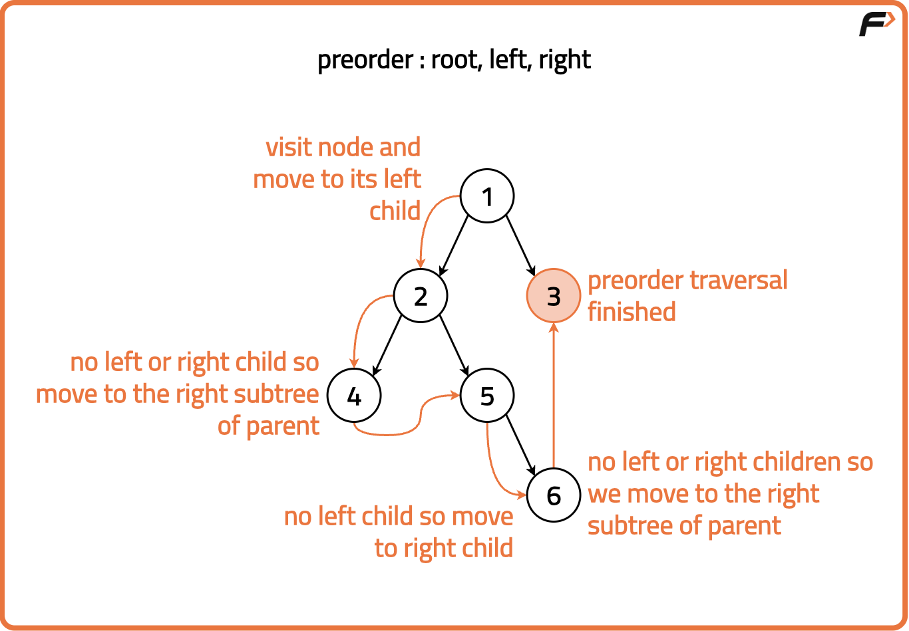
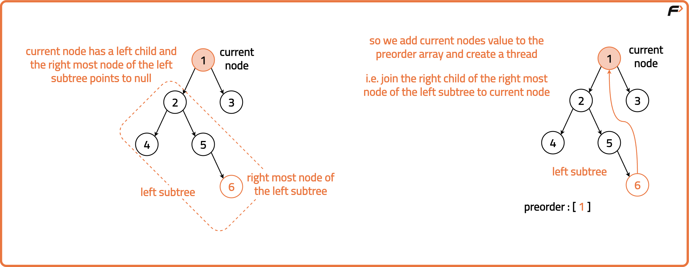
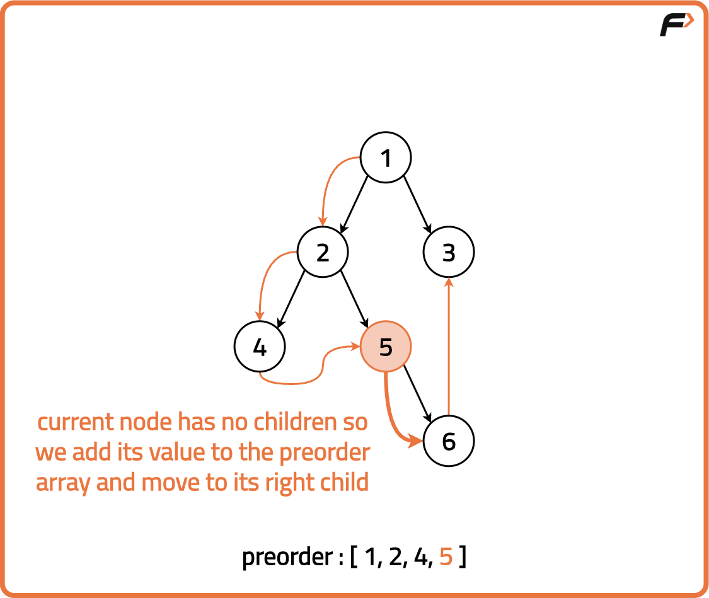
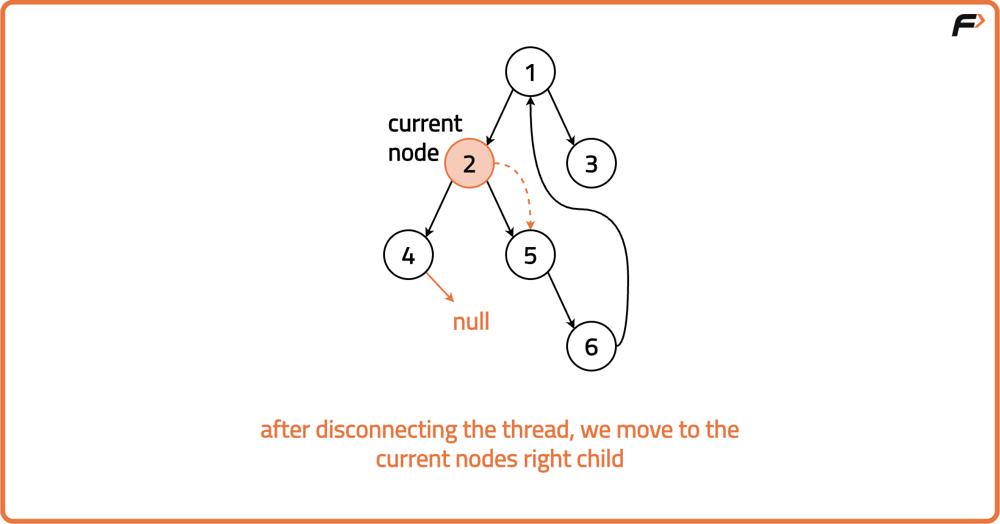
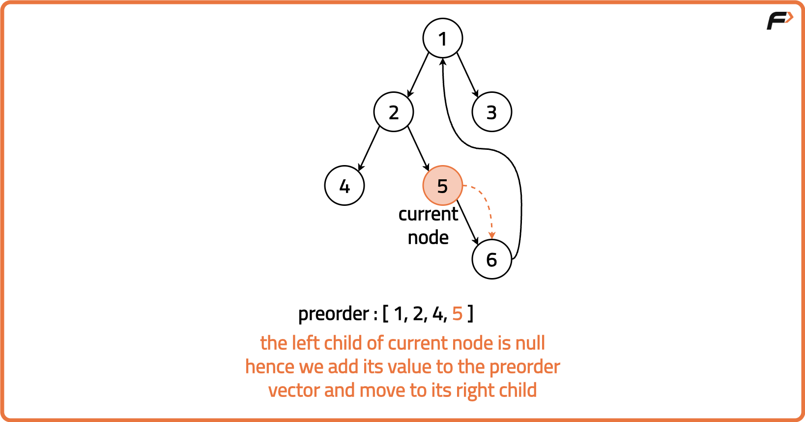
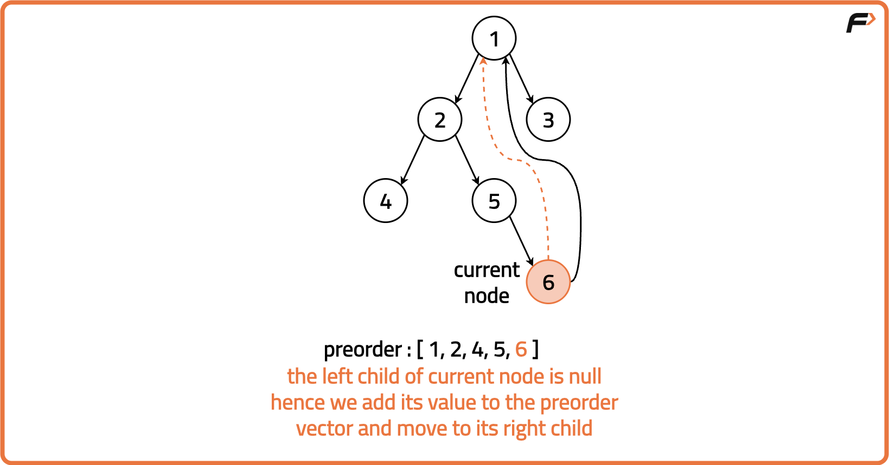
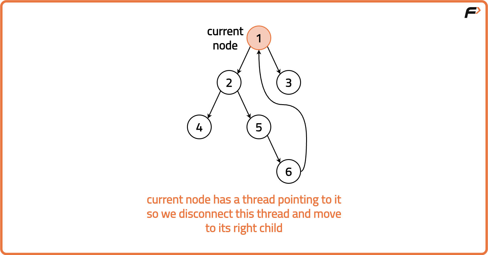
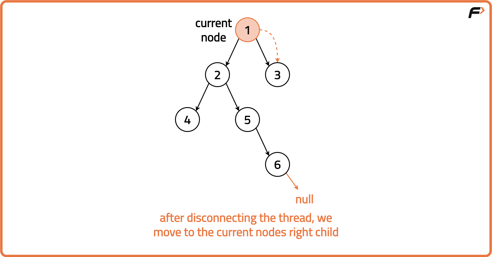
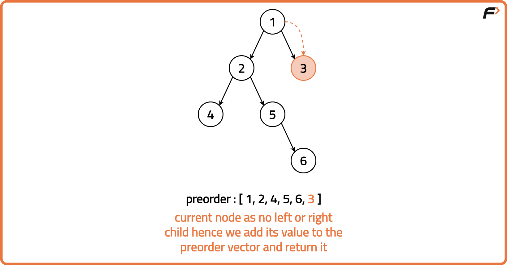

Archived from https://takeuforward.org/data-structure/morris-preorder-traversal-of-a-binary-tree/
Problem Statement: Given a Binary Tree, implement Morris Preorder Traversal and return the array containing its preorder sequence.
Morris Preorder Traversal is a tree traversal algorithm aiming to achieve a space complexity of O(1) without recursion or an external data structure. The algorithm should efficiently visit each node in the binary tree in preorder sequence, printing or processing the node values as it traverses, without using a stack or recursion.
Output: [1 2 4 5 8 3 6 7 9 10]Explanation : We traverse the binary tree in the order of Left, Root then Right.

Disclaimer:
Here is the practice link to help you assess your knowledge better.
It's highly recommend trying to
solve it before looking at the solution.
Approach
Algorithm
A prerequisite to this problem is Morris Inorder Traversal of Binary Tree. We extend Morris Inorder Traversal to Preorder Morris Traversal and modify the algorithm to print the current node’s value before moving to the left child when the right child of the inorder predecessor is null.
This change ensures that the nodes are processed in the desired order for Preorder Traversal. The basic structure of Morris Traversal remains intact, but the printing step is adjusted, resulting in a Preorder Traversal that is still in-place and has a constant space complexity.

In Morris Inorder Traversal, we are traversing the tree in the way: Left, Root, Right. In Morris Preorder traversal we want to traverse the tree in the way: Root, Left, Right. Therefore, the following code changes are required:
When the current node has a left child: In Morris Inorder Traversal, a new thread is created by establishing a temporary link between the current node and its in-order predecessor. In Morris Preorder Traversal, we want to print the root before visiting the left child. Therefore, after setting the thread (establishing the link), we print the current node's value before moving it to its left child.

When the current node has no left child:
This case remains unchanged from Morris Inorder Traversal. If the current node has no left child, there is nothing to visit on the left side. In both Inorder and Preorder traversals, we want to print the current node's value and move to the right child. Therefore, there is no code modification needed for this scenario.

Initialise a current to traverse the tree. Set current to the root of the Binary Tree.
While the current is not null: If the current node has no left child, print the current node's value and move to the right child ie. set current to its right child.
If the current node has a left child, we find the in-order predecessor of the current node. This in-order predecessor is the rightmost node in the left subtree or the left subtree's rightmost node.
If the right child of the in-order predecessor is null, set the right child to the current node. Print the value of the current node as preorder traverses the tree in the order: Root, Left then Right. Move to the left child (i.e., set current to its left child).
If the right child of the in-order predecessor is not null, revert the changes made in the previous step by setting the right child as null. Move to the right child (i.e., set current to its right child).
Repeat the steps until the entire tree is not traversed.






Code
#include <bits/stdc++.h>
using namespace std;
// TreeNode structure
struct TreeNode {
int val;
TreeNode *left;
TreeNode *right;
TreeNode(int x) : val(x), left(nullptr), right(nullptr) {}
};
class Solution {
public:
// Function to perform iterative Morris
// preorder traversal of a binary tree
vector<int> getPreorder(TreeNode* root) {
// Vector to store the
// preorder traversal result
vector<int> preorder;
// Pointer to the current node,
// starting with the root
TreeNode* cur = root;
// Iterate until the
// current node becomes NULL
while (cur != NULL) {
// If the current node
// has no left child
if (cur->left == NULL) {
// Add the value of the
// current node to the preorder vector
preorder.push_back(cur->val);
// Move to the right child
cur = cur->right;
} else {
// If the current node has a left child
// Create a pointer to traverse to the
// rightmost node in the left subtree
TreeNode* prev = cur->left;
// Traverse to the rightmost node in the
// left subtree or until we find a node
// whose right child is not yet processed
while (prev->right && prev->right != cur) {
prev = prev->right;
}
// If the right child of the
// rightmost node is NULL
if (prev->right == NULL) {
// Set the right child of the
// rightmost node to the current node
prev->right = cur;
// Move to the left child
cur = cur->left;
} else {
// If the right child of the
// rightmost node is not NULL
// Reset the right child to NULL
prev->right = NULL;
// Add the value of the
// current node to the preorder vector
preorder.push_back(cur->val);
// Move to the right child
cur = cur->right;
}
}
}
// Return the resulting
//preorder traversal vector
return preorder;
}
};
int main() {
TreeNode* root = new TreeNode(1);
root->left = new TreeNode(2);
root->right = new TreeNode(3);
root->left->left = new TreeNode(4);
root->left->right = new TreeNode(5);
root->left->right->right = new TreeNode(6);
Solution sol;
vector<int> preorder = sol.getPreorder(root);
cout << "Binary Tree Morris Preorder Traveral: ";
for(int i = 0; i< preorder.size(); i++){
cout << preorder[i] << " ";
}
cout << endl;
return 0;
}
import java.util.ArrayList;
import java.util.List;
// TreeNode structure
class TreeNode {
int val;
TreeNode left;
TreeNode right;
public TreeNode(int x) {
val = x;
left = null;
right = null;
}
}
// Solution class with Morris preorder traversal
class Solution {
// Function to perform iterative Morris
// preorder traversal of a binary tree
public List<Integer> getPreorder(TreeNode root) {
// List to store the
// preorder traversal result
List<Integer> preorder = new ArrayList<>();
// Pointer to the current node,
// starting with the root
TreeNode cur = root;
// Iterate until the
// current node becomes null
while (cur != null) {
// If the current node
// has no left child
if (cur.left == null) {
// Add the value of the
// current node to the preorder list
preorder.add(cur.val);
// Move to the right child
cur = cur.right;
} else {
// If the current node has a left child
// Create a pointer to traverse to the
// rightmost node in the left subtree
TreeNode prev = cur.left;
// Traverse to the rightmost node in the
// left subtree or until we find a node
// whose right child is not yet processed
while (prev.right != null && prev.right != cur) {
prev = prev.right;
}
// If the right child of the
// rightmost node is null
if (prev.right == null) {
// Set the right child of the
// rightmost node to the current node
prev.right = cur;
// Add the value of the
// current node to the preorder list
preorder.add(cur.val);
// Move to the left child
cur = cur.left;
} else {
// If the right child of the
// rightmost node is not null
// Reset the right child to null
prev.right = null;
// Move to the right child
cur = cur.right;
}
}
}
// Return the resulting
// preorder traversal list
return preorder;
}
}
// Public Main class for execution
public class Main {
public static void main(String[] args) {
TreeNode root = new TreeNode(1);
root.left = new TreeNode(2);
root.right = new TreeNode(3);
root.left.left = new TreeNode(4);
root.left.right = new TreeNode(5);
root.left.right.right = new TreeNode(6);
Solution sol = new Solution();
List<Integer> preorder = sol.getPreorder(root);
System.out.print("Binary Tree Morris Preorder Traversal: ");
for (int i = 0; i < preorder.size(); i++) {
System.out.print(preorder.get(i) + " ");
}
System.out.println();
}
}
# TreeNode class definition
class TreeNode:
def __init__(self, x):
self.val = x
self.left = None
self.right = None
class Solution:
def getPreorder(self, root):
# List to store the preorder traversal result
preorder = []
# Pointer to the current node, starting with the root
cur = root
# Iterate until the current node becomes None
while cur is not None:
# If the current node has no left child
if cur.left is None:
# Add the value of the current node to the preorder list
preorder.append(cur.val)
# Move to the right child
cur = cur.right
else:
# If the current node has a left child
# Create a pointer to traverse to the rightmost node in the left subtree
prev = cur.left
# Traverse to the rightmost node in the left subtree
# or until we find a node whose right child is not yet processed
while prev.right and prev.right != cur:
prev = prev.right
# If the right child of the rightmost node is None
if prev.right is None:
# Set the right child of the rightmost node to the current node
prev.right = cur
# Move to the left child
cur = cur.left
else:
# If the right child of the rightmost node is not None
# Reset the right child to None
prev.right = None
# Add the value of the current node to the preorder list
preorder.append(cur.val)
# Move to the right child
cur = cur.right
# Return the resulting preorder traversal list
return preorder
# Main function
if __name__ == "__main__":
# Construct the binary tree
root = TreeNode(1)
root.left = TreeNode(2)
root.right = TreeNode(3)
root.left.left = TreeNode(4)
root.left.right = TreeNode(5)
root.left.right.right = TreeNode(6)
# Create an instance of the Solution class
sol = Solution()
# Perform Morris Preorder Traversal
preorder = sol.getPreorder(root)
# Print the result
print("Binary Tree Morris Preorder Traversal:", end=" ")
for val in preorder:
print(val, end=" ")
print()
// TreeNode structure
class TreeNode {
constructor(x) {
this.val = x;
this.left = null;
this.right = null;
}
}
class Solution {
// Function to perform iterative Morris
// preorder traversal of a binary tree
getPreorder(root) {
// Vector to store the
// preorder traversal result
const preorder = [];
// Pointer to the current node,
// starting with the root
let cur = root;
// Iterate until the
// current node becomes null
while (cur !== null) {
// If the current node
// has no left child
if (cur.left === null) {
// Add the value of the
// current node to the preorder array
preorder.push(cur.val);
// Move to the right child
cur = cur.right;
} else {
// If the current node has a left child
// Create a pointer to traverse to the
// rightmost node in the left subtree
let prev = cur.left;
// Traverse to the rightmost node in the
// left subtree or until we find a node
// whose right child is not yet processed
while (prev.right && prev.right !== cur) {
prev = prev.right;
}
// If the right child of the
// rightmost node is null
if (prev.right === null) {
// Set the right child of the
// rightmost node to the current node
prev.right = cur;
// Move to the left child
cur = cur.left;
} else {
// If the right child of the
// rightmost node is not null
// Reset the right child to null
prev.right = null;
// Add the value of the
// current node to the preorder array
preorder.push(cur.val);
// Move to the right child
cur = cur.right;
}
}
}
// Return the resulting
//preorder traversal array
return preorder;
}
}
// Main function
function main() {
const root = new TreeNode(1);
root.left = new TreeNode(2);
root.right = new TreeNode(3);
root.left.left = new TreeNode(4);
root.left.right = new TreeNode(5);
root.left.right.right = new TreeNode(6);
const sol = new Solution();
const preorder = sol.getPreorder(root);
console.log("Binary Tree Morris Preorder Traveral: " + preorder.join(" "));
}
// Execute the main function
main();
Complexity Analysis
Time Complexity: O(2N), the time complexity is linear, as each node is visited at most twice (once for establishing the temporary link and once for reverting it). Space Complexity: O(1), the space complexity is constant, as the algorithm uses only a constant amount of extra space irrespective of the input size.